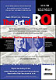

Real Player streaming video (.ram):
Tape 1 (1st hour of 4-hours)
High bandwidth (T1)
Medium bandwidth (56k)
Low bandwidth (28k)
| minutes | index of speakers |
| 00-03 | Andre Crump, Java Product Platform Group, Sun Microsystems |
| 03-07 | Anil Gadre, VP Marketing, Sun Microsystems |
| 07-52 | Paul Strassmann |
|
Art of ROI links:
|
 Click to read flyer |
Join this half day symposium and learn how to make the competitive case for Javatm technology and other new "open" technologies in dollars and sense.
Hear an industry panel of leaders in economics, business, and the Internet explain how they have used Javatm technology and other "open" technologies to achieve significant positive Return On Investment (ROI).
Featuring:
|
Paul Strassmann Author of "Business Value of Computers", and "The Squandered Computer", #1 selling Information Management book in 1998 on Amazon.com. |
Daryl Plummer Group Vice President Software Development, Gartner Group |
Complimentary signed copies of Paul Strassmann's book, The Squandered Computer will be available for attendees.
[ Strassmann, Inc. ]
{kind=link}